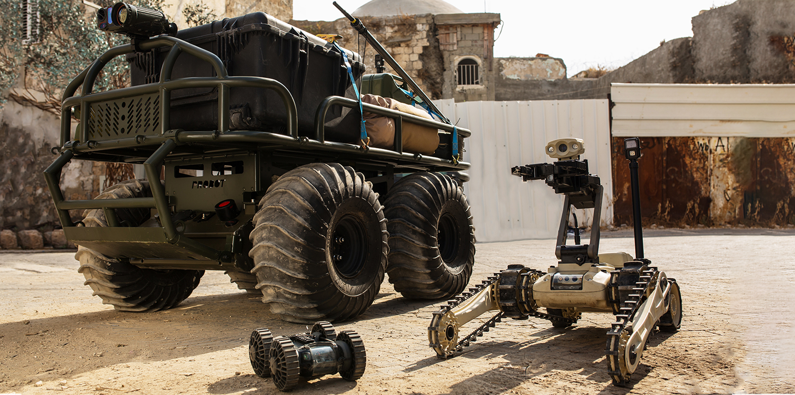

ආරක්ෂක භටයන් වෙනුවට ස්වයංක්රීය ආරක්ෂක රොබෝවරුන් ප්රතිස්ථාපනය කළ හැකිද යන අදහස වසර ගණනාවක් තිස්සේ සලකා බැලුනු අදහසකි. පිරිවැය ඉතිරි කිරීමේ ව්යාපාරික අවස්ථාවක් ලෙස හඳුනා ගත් මේ අදහස දැන් ඇතැම් රටවල ක්රියාත්මක වෙමින් පවතිනවා. විදේශීය හමුදා භෞතික වශයෙන් ප්රායෝගික නොවන හෝ භයානක වූ කාර්යයන් ඉටු කිරීමට ස්වයංක්රීය ආරක්ෂක රොබෝවරුන් භාවිතා කිරීම කාලයක් තිස්සේ සිදු කළා. බෝම්බ ඉවත් කිරීම, ගැඹුරු මුහුදේ කිමිදීම, කුඩා පයිප්ප, බිත්ති, ගිනි කඳු වැනි විෂ සහිත ප්රදේශ ගවේෂණය කිරීම ඔවුන්ට පවරනු ලැබුවා. මේ රෝබෝවරුන්ව හඳුන්වනු ලැබුවේ Unmanned Ground Vehicle ලෙසයි.
ස්වයංක්රීය ආරක්ෂක රොබෝවරු (ASR) මුර සංචාරය කිරීමට, වාර්තා කිරීමට, නිරීක්ෂණය කිරීමට, විමර්ශන කිරීමට සහ අනවසරයෙන් ඇතුළු වන්නන් හඳුනා ගැනීමට, ස්වයංක්රීය බලපත්ර තහඩු හඳුනාගැනීමට, සැක සහිත උපාංග හඳුනා ගැනීමට, මුහුණු හඳුනාගැනීම සහ ලුහුබැඳීම් සිදු කිරීමට යොදා ගත හැකිය. නමුත් මෙම රෝබෝවරුන්ට සැක සහිත පුද්ගලයන් රඳවා තබා ගැනීමට හෝ අත්අඩංගුවට ගැනීමට හැකියාවක් නොමැත. සිදු විය හැකි අපරාධ වැළැක්වීම සඳහා ඔවුන්ගේ භෞතික පැවැත්ම වැදගත් වනු ඇත.

සාමාන්ය ආරක්ෂකයන්ට රාත්රී මුර සංචාරයේ යෙදීම නීරස අත්දැකීමක් වේ. සාමාන්ය මිනිසෙකුට අනතුරුදායක, නීරස සහ වෙහෙසකර වන කාර්යයන් ඉටු කර ගැනීමට මෙම රොබෝවරුන් යොදා ගත හැකි වීම විශේෂ වාසියකි. ආයතන වල ආරක්ෂාවට මොවුන්ව යෙදිය හැකි වේ. ආයතනයකට අනවසර පුද්ගලයන් ඇතුළු වීම වලක්වන්න ඔවුන්ගේ සහාය ලබා ගැනීම ඉතා පහසු වනු ඇත. සාමාන්ය ආරක්ෂකයෙකු රවටා ආයතනයකට ඇතුළු වීමේ අවදානමක් තිබුණත් ස්වයංක්රීය ආරක්ෂක රොබෝවරයෙක් රවටා ආයතනයට ඇතුළු වීම කිසි විටෙක සිදු කල නොහැකි වනු ඇත.
මුර සංචාරයේ යෙදෙන සාමාන්ය ආරක්ෂකයෙකුට එය නිතිපතා සිදු කරන්නට සිදු වෙනවා. නිරන්තරයෙන් නිර්ක්ෂණය කරමින් මුර සංචාරයේ යෙදීම මඟින් අනවසරයෙන් ඇතුළු වීම් සහ නීති විරෝධී ක්රියාවන් සිදු කිරීමට ඇති ඉඩකඩ වැළකෙනවා. සම්පූර්ණ ආරක්ෂාව සහතික කර ගන්නට නම් සියලුම ප්රදේශ අඛණ්ඩව සහ සම්පූර්ණයෙන් නිරීක්ෂණය කිරීමට සිදු වෙනවා. නමුත් මෙය සාමාන්ය ආරක්ෂකයෙකුට වෙහෙසකාරී සහ නීරස අත්දැකීමක් වනු ඇත. අපහසුතා නිසා මුර සංචාර වාර ගණන මඟ හැරෙන්නටද ඉඩ ඇත. එමඟින් ආරක්ෂාව අහිමි වීමේ අවදානමක් පැන නඟිනවා. මෙයට හොඳම විසඳුම වන්නේ වෙහසක් නොදැනෙන ස්වයංක්රීය ආරක්ෂක රොබෝවරුන් යොදා ගැනීමයි.

ත්රස්තවාදී ගැටළු, ප්රාණ ඇපකරුවන් ලෙස සිවිල් වැසියන් යොදා ගන්නා අවස්ථා වලදී මිනිස් ජීවිත අවදානමේ හෙලන්නේ නැතිව ස්වයංක්රීය රොබෝවරු භාවිතා කරමින් දත්ත එකතු කිරීම සිදු කෙරේ. ස්වයංක්රීය රොබෝවරු මිනිස් මැදිහත්වීමකින් තොරව ක්රියා කරනවා. මෙම රොබෝවරුන්ගේ මිල අධික වුවත් එය දිගුකාලීන ආයෝජනයකි.
Sources: Tech Export